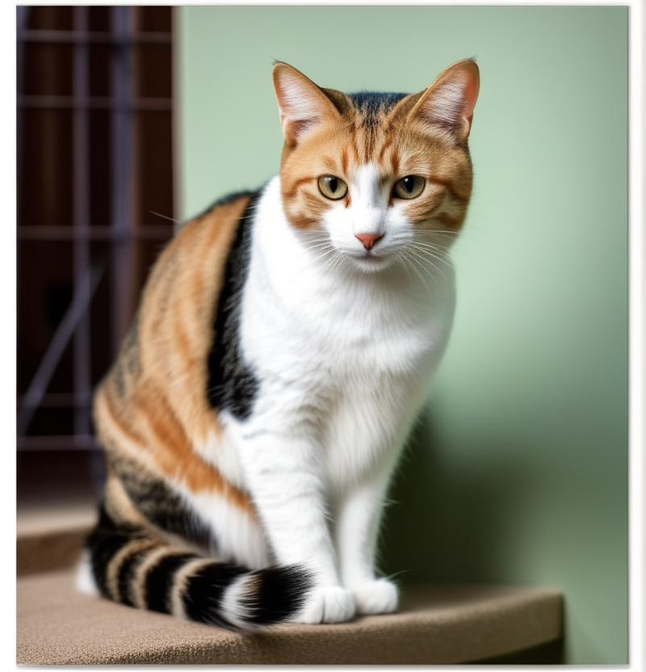

|  |
Actualmente, existen alrededor de 70 razas reconocidas de gatos, cada una con sus propias características distintivas, que han evolucionado a lo largo del tiempo gracias a la selección artificial llevada a cabo por los seres humanos. Estas criaturas fascinantes vienen en una amplia variedad de tamaños, pelajes y personalidades, lo que las convierte en compañeros únicos para sus dueños.
Los gatos son conocidos por su agudo sentido del oído y su capacidad de caza excepcional. Su sentido del olfato también es notable, y utilizan estas habilidades para explorar su entorno y comunicarse con otros gatos y animales. Además, su naturaleza independiente se equilibra con momentos de afecto y socialización, creando relaciones especiales con sus dueños. Investigaciones recientes han revelado detalles interesantes sobre la inteligencia felina. Los gatos tienen una memoria excepcional y pueden recordar eventos específicos y reconocer a personas que les han mostrado amabilidad o, en contraste, les han causado molestias. Su capacidad de adaptación y astucia les permite resolver problemas y aprender nuevas habilidades de manera efectiva.